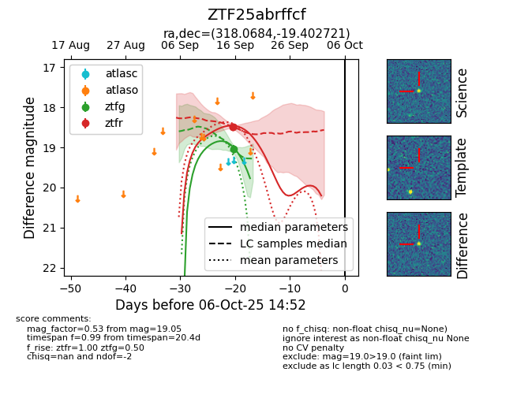
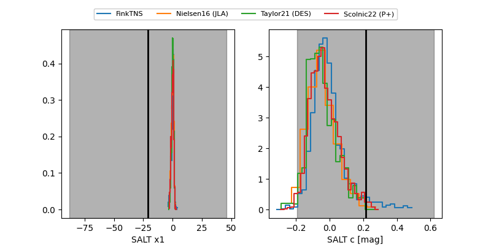

FINK: ZTF25abrffcf
Lasair: ZTF25abrffcf
ALeRCE: ZTF25abrffcf
ZTF25abrffcf (ztf,fink)
equatorial (ra, dec) = (318.0684,-19.40272)
galactic (l, b) = (29.3909,-39.45477)


last ztfg=19.05, ztfr=18.48
1 ztfg, 2 ztfr detections